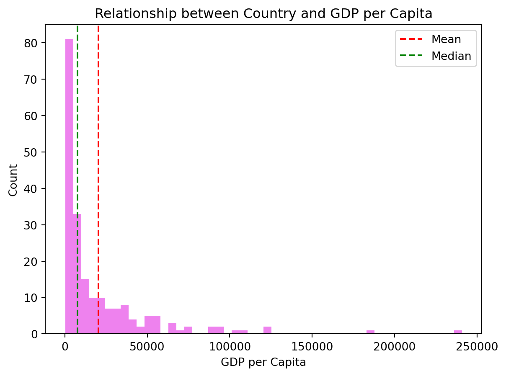
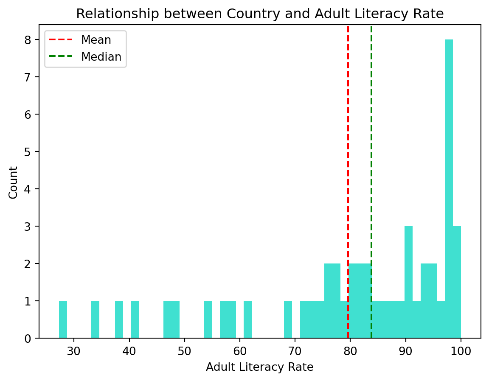
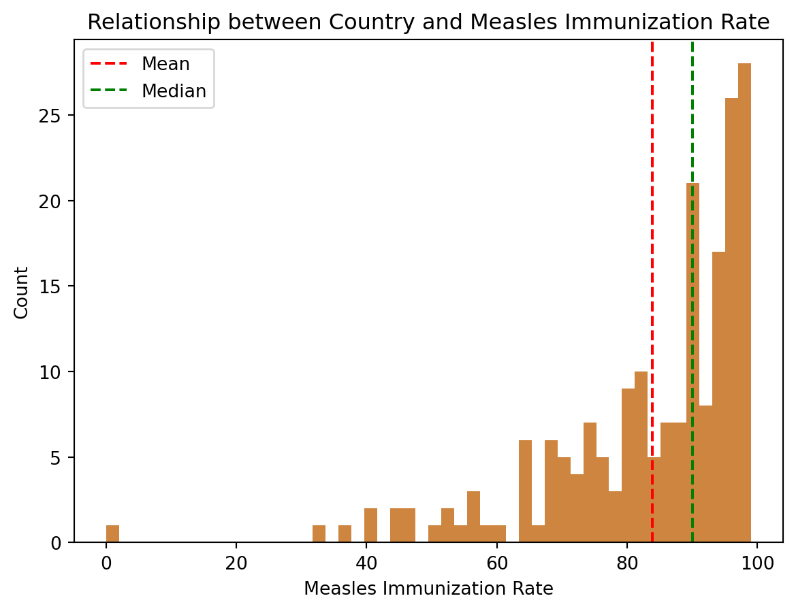
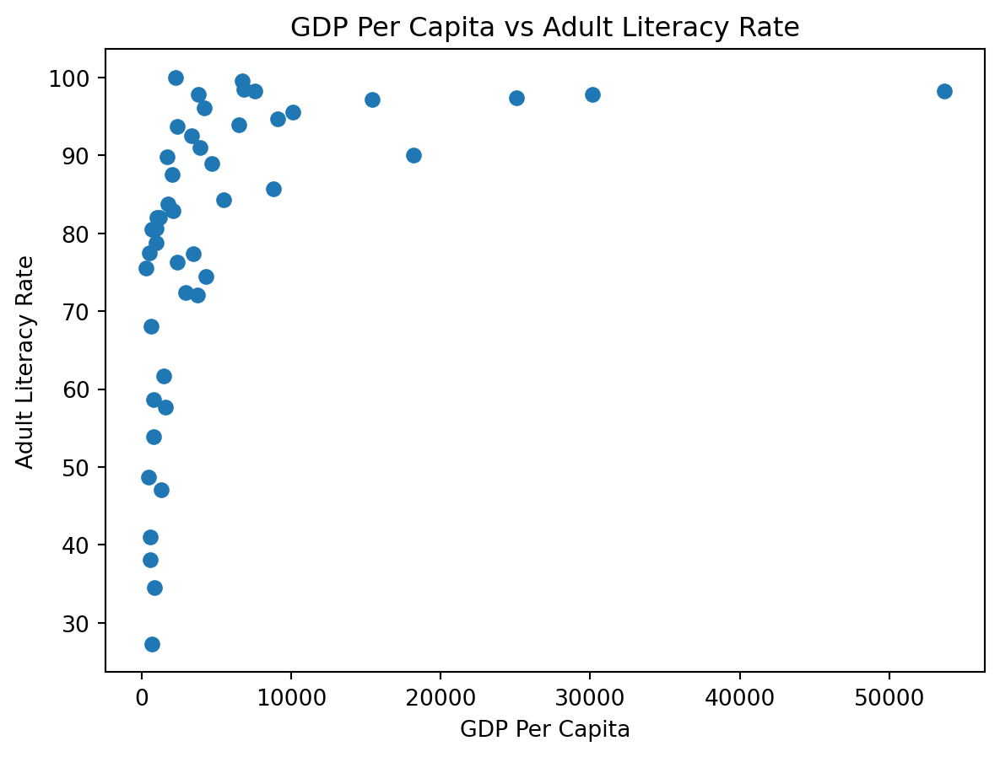
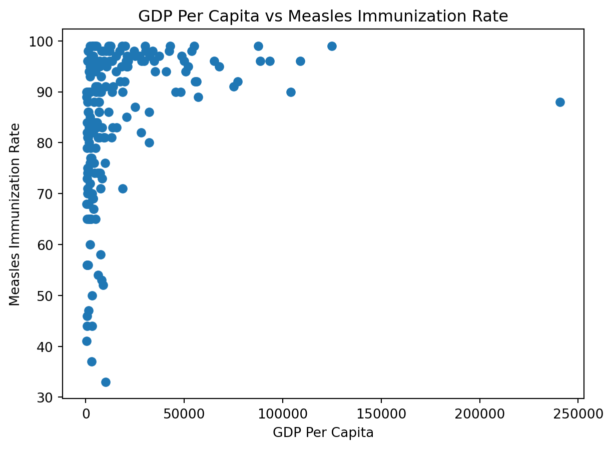
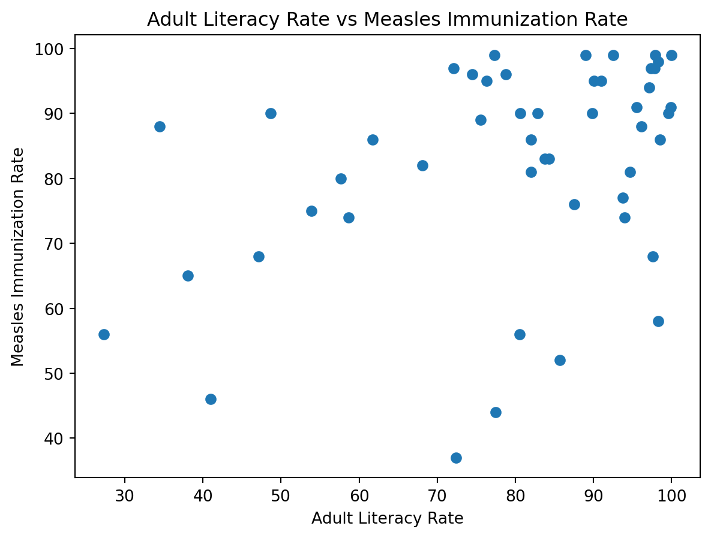

#Import Libaries
import pandas as pd
import numpy as np
import matplotlib.pyplot as pltAnalysis of 2022 World Developmental Indicators
A simple example
df= pd.read_csv('wdi.csv')
df.columns
gdp_stats = df['gdp_per_capita'].describe()
gdp_null = df['gdp_per_capita'].isnull().sum()
literacy_stats = df['adult_literacy_rate'].describe()
literacy_null = df['adult_literacy_rate'].isnull().sum()
measles_stats = df['measles_immunisation_rate'].describe()
measles_null = df['measles_immunisation_rate'].isnull().sum()Descriptive Statistics
We see here that the mean gpd per capita per country is $20,345 with a standard deviation of $31,308. We also see the median is $7,587 and the max is $240,862. This tells us the data is right skewed heavily, and there is a lot of deviation between gpd per capita by country.
gdp_statscount 203.000000
mean 20345.707649
std 31308.942225
min 259.025031
25% 2570.563284
50% 7587.588173
75% 25982.630050
max 240862.182448
Name: gdp_per_capita, dtype: float64We see here that only 14 countries have no data on GDP per capita, meaning our data is a good estimator for all countries.
gdp_null14We see here that the mean is 80% and median 84%, max is almost 100% for literacy rate of a country.
literacy_statscount 49.000000
mean 79.574801
std 19.375539
min 27.280001
25% 72.400002
50% 83.779999
75% 95.500000
max 99.999977
Name: adult_literacy_rate, dtype: float64But the number of countries that don’t have data is 168, telling us the data could be biased towards countries that have resources to conduct these tests, which could lead to literacy rates higher than the true rate. The data is not a good estimator for all countries.
literacy_null168We see here the mean measles immunization rate per country is 84%, the median is 90%, the max is 99%. The data is left skewed.
measles_statscount 193.000000
mean 83.854922
std 15.996083
min 0.000000
25% 76.000000
50% 90.000000
75% 96.000000
max 99.000000
Name: measles_immunisation_rate, dtype: float64We also see here only 24 countries have not reported data on their rates. A bit higher than we want, but the data is a decent estimator for all countries.
measles_null24Figures
GDP Visualization:

Literacy Rate Visualization:

Measles Immunization Rate Visualization:




- Source: World Development Indicators (2022)
- Link: https://databank.worldbank.org/source/world-development-indicators
Key Statistics
From our analysis between Country and GDP per Capita, Literacy Rate, and Measles Immunization Rate for (fig:GDP-Visual?) , (fig:Literacy-Visual?) , and (fig:Measles-Visual?) , we have:
| Type | Mean | Median | Max | SD |
|---|---|---|---|---|
| GDP Per Capita | 20345.7 | 7587.6 | 240862.2 | 31309.0 |
| Literacy Rate | 79.6 | 83.8 | 100 | 19.4 |
| Immunization Rate | 83.6 | 90.0 | 99.0 | 16.0 |
We can also find the correlation between the variables of the last 3 plots for (fig:GDP-Lit?) , (fig:GDP-Measles?) , and (fig:Lit-Measles?) :
| Relationship | Correlation | |
|---|---|---|
| 0 | GDP per Capita and Literacy Rate | 0.425476 |
| 1 | GDP per Capita and Measles Immunization Rate | 0.313709 |
| 2 | Literacy Rate and Measles Immunization Rate | 0.386177 |
We see that the correlation is not that high for any, but they have a weak positive correlation.
title: “My Quarto Document” subtitle: “A simple example” author: “Danilo Freire” date: “2024-09-30” format: html bibliography: references.bib
Introduction
This is a simple Quarto document. This is ?@fig-sine.
#| echo: true #| eval: true #| fig-cap: “Sine function” #| label: fig-sine
import matplotlib.pyplot as plt import numpy as np
x = np.linspace(0, 10, 100) y = np.sin(x)
plt.plot(x, y) plt.xlabel(“x”) plt.ylabel(“sin(x)”) plt.title(“Figure 01”) plt.show()